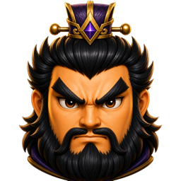
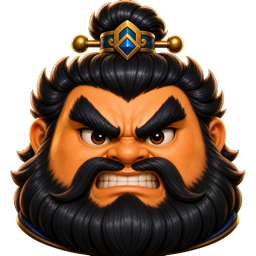
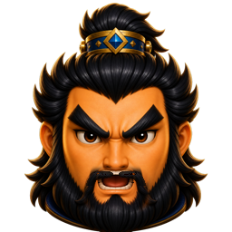
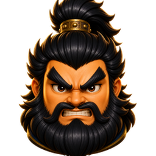
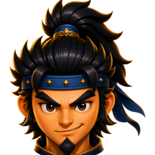
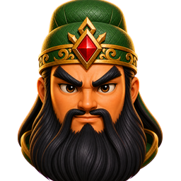
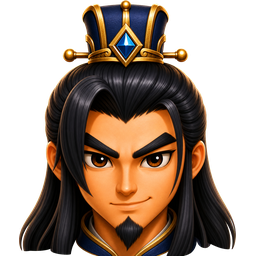

현재 조조
좋은 완성도지만 왕관과 넓은 깃이 함께 읽혀 초상/흉상 느낌이 약간 남음.
현재 파일조조처럼 목선에서 닫되, 조흥은 기존 캐릭터를 유지하고 표정만 살짝 바꾸는 기준을 비교하는 페이지.

좋은 완성도지만 왕관과 넓은 깃이 함께 읽혀 초상/흉상 느낌이 약간 남음.
현재 파일
조조 기준으로 다시 그린 active 파일. 더 넓고 둥근 얼굴, 얇은 목선, 어깨/상반신 제거.
현재 파일얼굴 비율과 무어깨 방향은 개선됨. 왕관 높이와 아래 칼라 두께는 최종 기준으로 볼 때 추가 판단 필요.
후보 파일 후보 소스왕관은 더 낮고 얼굴 중심성은 좋음. 다만 상단 여백이 커서 허저식 꽉 찬 기준에서는 후보 1보다 약함.
후보 파일 후보 소스표정은 좋지만 파란 목도리와 어깨 갑옷이 아래 양끝을 채워 목까지만 닫히는 기준에서 벗어남.
백업 파일
기존 조흥을 그대로 유지한 active 파일. 머리, 관, 수염, 얼굴형, 목선은 보존하고 입만 전투 함성으로 교체.
현재 파일기품은 생겼지만 기존 조흥의 머리/얼굴/관 느낌이 바뀌어 다른 게임 캐릭터처럼 보여 폐기.
백업 파일조조와는 구분됐지만 한쪽 눈과 삐딱한 입매가 간신배처럼 보이고 얼굴도 너무 얇아 폐기.
백업 파일목선 기준은 맞았지만 조조와 눈썹, 수염, 정면 분노 표정이 너무 비슷해 게임 판독성이 약했음.
백업 파일기존 조흥 픽셀을 유지한 아주 약한 표정 완화. 캐릭터 보존은 가장 강하지만 차이는 작음.
후보 파일이전 미세 보정 후보. 기존 조흥의 머리, 관, 수염, 얼굴형, bbox를 그대로 두고 입매만 중간 강도로 완화.
후보 파일기존 조흥 유지형 중 가장 강한 표정 완화. 캐릭터는 유지하지만 미세 보정 한계상 차이는 여전히 절제됨.
후보 파일기존 조흥의 머리, 관, 수염, 얼굴형, bbox를 그대로 두고 입만 좁게 연 전투 함성 후보.
후보 파일현재 active. 기존 조흥의 덥수룩한 머리와 수염 실루엣은 유지하고, 입 부분만 더 분명한 전투 함성으로 교체.
후보 파일가장 강한 함성 후보. 입은 가장 잘 보이지만 콧수염 중심부 변화가 v2보다 조금 더 큼.
후보 파일좋은 초기 방향이지만 포니테일과 오른쪽 어깨/파란 갑옷이 많이 보여서 neck-only 기준에서 벗어남.
백업 파일
반신 전위를 기준으로 새로 그린 active 파일. 큰 검은 머리, 금색 머리띠, 두꺼운 눈썹, 이 악문 표정, 풍성한 수염 유지.
현재 파일기존 아이콘을 억지로 마스크한 실패본. 반신 기준 재생성 전 백업.
백업 파일반신 전위를 기준으로 새로 그린 후보 비교. 현재 active는 v2_112.
비교 시트
반신 얼굴을 기준으로 다시 그린 active 파일. 큰 파란 보석 없이 천 머리띠+작은 금장식, 어린 감녕 얼굴, 자신감 있는 미소, 작은 턱수염 유지.
현재 파일2026-06-09 active. 목선 기준은 맞았지만 반신 얼굴과 같은 사람처럼 보이지 않아 교체.
백업 파일표정과 정체성은 좋지만 파란 스카프와 어깨 갑옷이 아래를 많이 채워 neck-only 기준에서 벗어남.
백업 파일반신 얼굴 기준으로 다시 그린 후보 비교. 세 후보 모두 방향 통과. 현재 active는 균형형 v2_104.
비교 시트
반신 그림체 기준 cute50 얼굴샷. 귀여움 보강 후 오른쪽 아래 수염 잘림을 수정한 버전. 현재 active는 cuteplus no-sidecut v2_104.
현재 파일직전 cuteplus active. 방향은 맞지만 오른쪽 아래 수염/옆머리 실루엣이 마스크로 잘려 교체.
백업 파일귀여움 추가 버전에서 수염 잘림을 없앤 후보 비교. 현재 active는 no-sidecut v2_104.
비교 시트
반신 곽가를 기준으로 다시 그린 active 파일. 책사 미소, 왼쪽 앞머리, 긴 검은 머리, 남색 관, 파란 보석, 작은 턱수염 유지.
현재 파일완성본처럼 보였지만 아래 모서리가 차고 몸통/칼라감이 남아 restart 기준에서 교체.
백업 파일반신 얼굴 기준으로 다시 그린 후보 비교. 현재 active는 모서리 투명이 유지된 v1_100.
비교 시트닫힌 입으로 통일되던 문제와 왼쪽 쏠림을 수정한 비교. 현재 active는 황개/황충 호령, 유비 지시, 여포 도발 함성, 육손 열린 미소, 마초 함성.
비교 시트맹획부터 서황까지 반신 기준으로 재생성/검증한 비교. 허저는 이미 승인된 최종이라 그대로 유지하고, 나머지는 전쟁신 표정과 중앙 목선 프레임을 맞춤.
비교 시트안량부터 악진까지 반신 기준으로 재생성/검증한 비교. 안량은 큰 뿔 후보를 버리고 붉은 깃 중심으로 재생성, 우금은 둥근 첫 후보를 버리고 중후한 지휘형으로 조정.
비교 시트이전부터 조진까지 반신 기준으로 재생성/검증한 비교. 조홍의 녹색 키 잔여를 재처리하고, 조비/조식/조창은 표정과 관 실루엣으로 구분.
비교 시트조휴부터 등애까지 반신 기준으로 재생성/검증한 비교. 하후패/등애는 중복 보석 후보를 버리고 단일 장식으로 재생성.
비교 시트종회부터 유엽까지 반신 기준으로 재생성/검증한 비교. 곽회/문빙은 중복 보석 후보를 재생성했고, 한호는 큰 얼굴 중복감을 줄인 후보로 교체.
비교 시트괴월부터 장흠까지 반신 기준으로 재생성/검증한 비교. 백발 노장들은 표정과 관 색으로, 장흠은 작은 goatee와 활기 있는 웃음으로 분리.
비교 시트능통부터 우번까지 반신 기준으로 재생성/검증한 비교. 주환은 중복 보석 후보를 버리고 단일 붉은 머리띠로 재생성.
비교 시트하제부터 대교까지 반신 기준으로 재생성/검증한 비교. 손소/손환은 수염과 중복 관 후보를 버리고, 여성 캐릭터는 장신구를 유지하되 얼굴 중심으로 정리.
비교 시트소교부터 마속까지 반신 기준으로 재생성/검증한 비교. 관흥은 중복 top ornament를 제거했고, 유선은 겁먹은 왕자 표정으로 전쟁신 다양성을 확보.
비교 시트마량부터 주창까지 반신 기준으로 재생성/검증한 비교. 마량 흰 눈썹, 미방 불안 표정, 요화 노병감, 주창 함성 표정을 명확히 분리.
비교 시트마대부터 맹달까지 반신 기준으로 재생성/검증한 비교. 진도는 큰 관 후보를 버리고 작은 머리 장식으로 재생성, 부사인은 불안 표정을 유지.
비교 시트장송부터 원담까지 반신 기준으로 재생성/검증한 비교. 사마가는 부족 전사 깃과 이를 악문 표정, 동궐은 둥근 투구와 파란 보석, 원담은 붉은 금관과 야심 있는 미소로 정리.
비교 시트